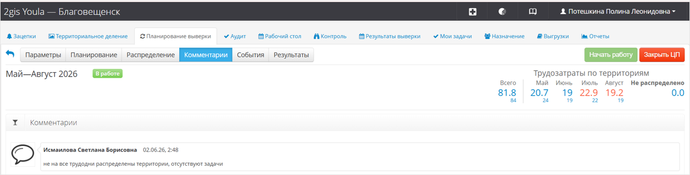

Вкладка «Комментарии»
На этой вкладке тебе нужно расписать, как ты распределил дополнительные
производственные задачи и сколько дней запланировал на каждую из них.
Или можно прикрепить ссылку на заполненную таблицу, о которой мы уже рассказывали
в главе «Вкладка Параметры». Тогда расписывать это текстом уже не требуется.
Также здесь будет оставлять свои комментарии твой куратор из направления контроля. Куратор проверяет составленный тобой на месяц план и пишет, если нужно что-то исправить или доработать.
